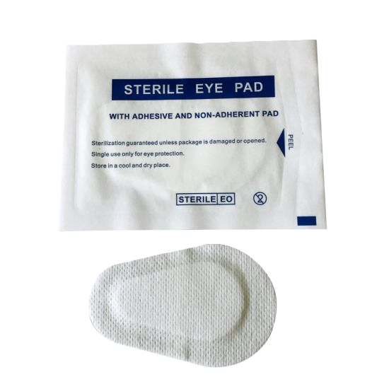

Waterproof Plasters
If a wound is bleeding but is fairly small, a waterproof plaster can be used once the wound has been washed with water and padded dry. If you're preparing food in the kitchen, use a blue plaster so you will see it if it drops in the food.

Sterile Eyepads
If the wound is small or the patient has a foreign object in their eye such as dirt or grit, but is not embedded, you can use an eye pad or small dressing until you get medical advice.
To use the eye pad, apply it lightly over the eye and secure it with some bandage around the head using a knot or tape.

Crepe Bandage
Crepe bandages are mainly used for sprained or strained ankles or wrists. Before applying the bandage, treat the injury with an ice pack to reduce swelling. After 10 minutes, remove the ice pack for a few minutes before re-applying. If the swelling does not go down, it could be a break so you should seek medical advice as an x-ray may be needed.
If you think it's just a strain and some of the swelling has gone down as a result of the ice pack, apply the crepe bandage for support and secure using tape or safety pins.
2.png)
Triangular Bandage(sling)
You can use a triangular bandage in many different ways; as a sling to lift a limb (which is tied at the back of the neck), to prevent blood loss, to secure a fractured collar bone or hand and for sprains and strains if crepe bandage isn't available.

Sterile Dressing Pads
The pads which come in a variety sizes and have a bandage attached to them. They are used to cover most common wounds whenever a plaster is too small.
When applying, the pad should be completely sealed down to stop infections entering the wound and stop blood seeping out. The bandage should be secured by tying a knot, safety pins or tape.
If the wound is severe, apply the dressing and seek medical advice. If blood soaks through the dressing, do not remove it. Instead, take a large dressing and apply it over the top as a second layer.
Sterile Gloves
Sterile gloves are used to protect the patient if the first aider's hands are dirty and protects the first aider if the patient is bleeding.
Tough Cut Scissors
These are used to cut clothing to get to a wound or a fracture. They are safety scissors so there is no danger of cutting skin.
You should only use these scissors if you need to see the injury. If the wound is on the arm or leg, cut along the seam of the trousers or the shirt and on a side away from the wound.
Alcohol-free wipes
These are used to clean grazes and minor wounds when water is not available.
To avoid introducing an infection, only wipe the wound once before disposing of the wipe. Use a new wipe and repeat if necessary.
Safety Pins
Safety pins can be used to secure crepe bandage or for securing a sling on the elbow.
Tape
Used to secure bandages.